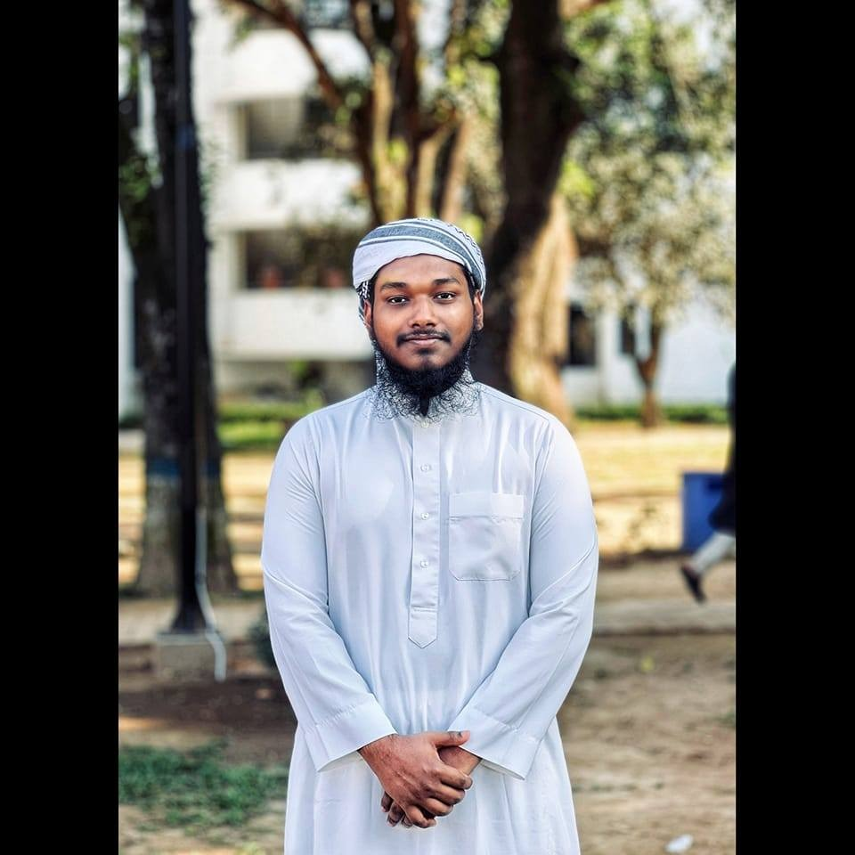

Md.Asiful Islam
About Me
Hello, I’m Md. Asiful Islam, a passionate Junior Web Developer with over 3 years of experience in the field. My journey in web development began during my college years when I discovered my love for coding. Motivated by my interest, I pursued a degree in Computer Science and Engineering (CSE) at Brac University, which further fueled my ambition to grow in this dynamic field. I have gained extensive practical knowledge through self-learning using free resources like YouTube and W3Schools. Additionally, I completed a Junior Web Development course from Programming Hero, where I honed my skills in front-end and back-end technologies. This combination of self-taught knowledge and formal training has helped me build a solid understanding of web development principles. Over the years, I have worked on various projects, including building responsive websites, creating dynamic web applications, and integrating APIs. My technical skillset includes HTML, CSS, JavaScript, React, Node.js, and databases like MongoDB and MySQL. I am passionate about continuously improving my skills and keeping up with the latest web development trends. I enjoy solving complex problems and am always eager to learn new technologies to enhance my expertise. As I continue my journey, I am excited to contribute to meaningful projects and collaborate with like-minded professionals to build innovative web solutions.
Education
| Degree | Institution | Grade |
|---|---|---|
| HSC | Dr.Mahabubur Rahman Molla College | 5.0 |
| SSC | Motijheel Model School and College | 5.0 |
| JSC | Motijheel Model School and College | 5.0 |
Skills
- HTML5, CSS3, JavaScript
- React.js, Node.js
- Wordpress
- Git & GitHub
Md.Asiful Islam
Undergraduate Student
Computer Science and Engineering
BRAC University